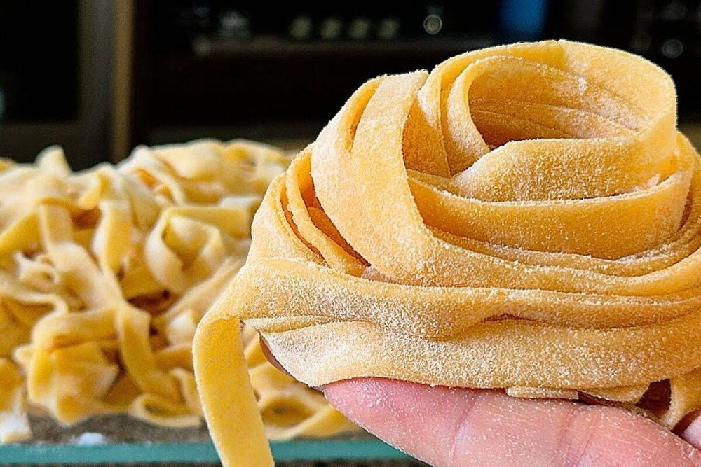

Massas
Massa básica de macarrão

Ingredientes
- 4 xícaras de farinha de trigo
- 4 ovos tipo extra
- ½ colher (chá) de sal
Modo de preparo
- Peneire a farinha sobre uma superfície de trabalho, formando um monte. Faça um buraco no centro do monte e coloque aí os ovos. Junte o sal e, com a ajuda de um garfo, vá incorporando a farinha aos ovos começando pela parte interna do monte.
- Quando a massa ficar difícil de manusear, passe-a para uma superfície de trabalho enfarinhada. Trabalhe a massa com as mãos até ficar homogênea e elástica.
- Forme uma bola com a massa, enrole em filme plástico e deixe descansar por cerca de 30 minutos. Abra e corte a massa no formato desejado, polvilhe com farinha de trigo e congele.
Observação
Para utilizar em sopas, quebre a massa ainda congelada em pedaços e jogue na sopa, no final do cozimento. Variação: para fazer uma massa verde, use 3 ½ xícaras de farinha de trigo, 3 ovos, 2 colheres (sopa) de espinafre cozido e picado fino e ½ colher (chá) de sal. Congelamento: coloque a massa já cortada em saco plástico que feche hermeticamente, etiquete e leve ao freezer. Descongelamento: retire a massa do saco plástico, coloque em água fervente com sal e cozinhe.